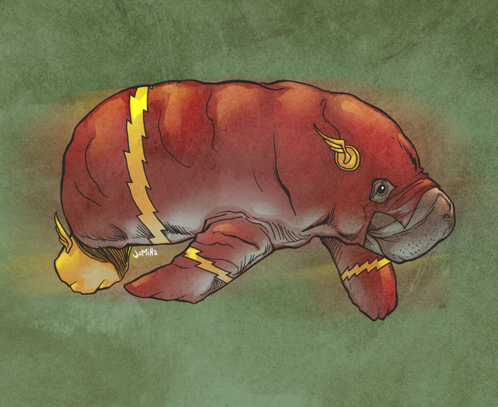
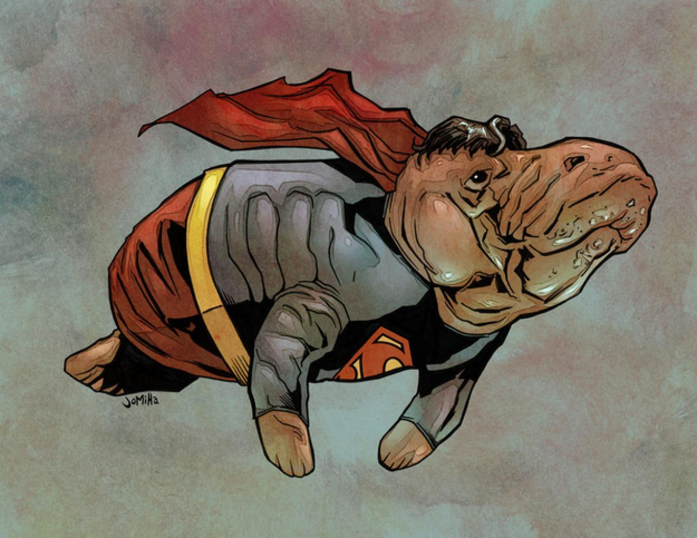

Flash Manatee
Flash Manatee is an ancient creature that flashes around the water.
Let's see a superhero.... Click here to see the surprise!
What a cute flash!! Click here to hide it again.

Super Manatee
Super Manateeis super amazing!
Let's see a superhero.... Click here to see the surprise!
What a super, superManatee!! Click here to hide it again.

Read More!
Super Manateeis super amazing!
Let's see a superhero.... Click
here to see the surprise!
Manatees (family Trichechidae, genus Trichechus) are large, fully aquatic, mostly herbivorous marine mammals sometimes known as sea cows. There are three accepted living species of Trichechidae, representing three of the four living species in the order Sirenia: the Amazonian manatee (Trichechus inunguis), the West Indian manatee (Trichechus manatus), and the West African manatee (Trichechus senegalensis). They measure up to 4.0 metres (13.1 ft) long, weigh as much as 590 kilograms (1,300 lb),[4] and have paddle-like flippers. The name manatí comes from the Spanish "manatí", derived from the Caribbean word sometimes cited as "manattouï". The etymology is dubious, with connections having been made to Latin "manus" (hand), and to a word used by the Taíno, a pre-Columbian people of the Caribbean, meaning "breast".[5]
Let's see a superhero.... Click
here to see the surprise!
Manatees (family Trichechidae, genus Trichechus) are large, fully aquatic, mostly herbivorous marine mammals sometimes known as sea cows. There are three accepted living species of Trichechidae, representing three of the four living species in the order Sirenia: the Amazonian manatee (Trichechus inunguis), the West Indian manatee (Trichechus manatus), and the West African manatee (Trichechus senegalensis). They measure up to 4.0 metres (13.1 ft) long, weigh as much as 590 kilograms (1,300 lb),[4] and have paddle-like flippers. The name manatí comes from the Spanish "manatí", derived from the Caribbean word sometimes cited as "manattouï". The etymology is dubious, with connections having been made to Latin "manus" (hand), and to a word used by the Taíno, a pre-Columbian people of the Caribbean, meaning "breast".[5]